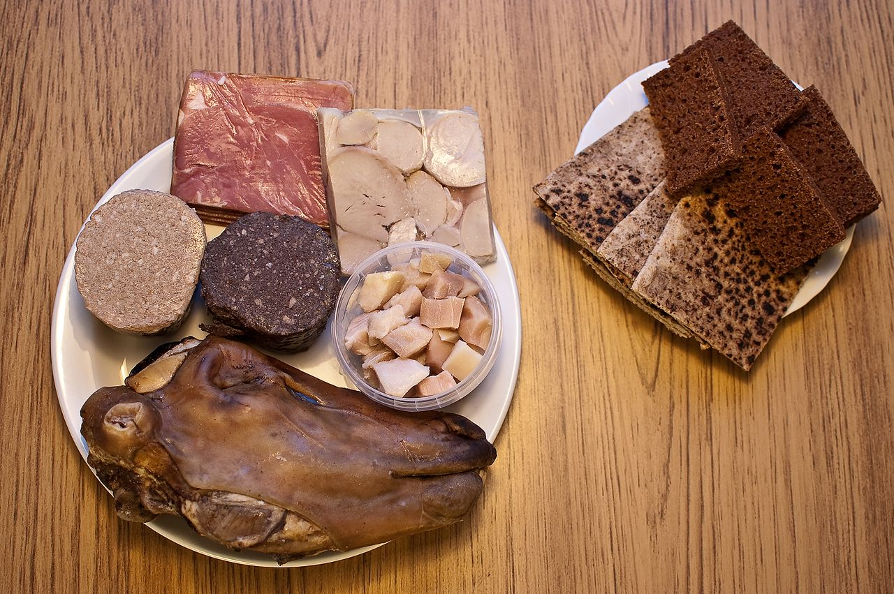

Iceland has a market economy with relatively low taxes compared
to other OECD countries.[9] It maintains a Nordic social welfare
system that provides universal health care and tertiary education
for its citizens.[10] Iceland ranks highly in economic,
political and social stability and equality. In 2013, it was
ranked as the 13th most-developed country in the world by the
United Nations' Human Development Index.[6] Iceland runs
almost completely on renewable energy. Affected by the ongoing
worldwide financial crisis, the nation's entire banking system
systemically failed in October 2008, leading to a severe depression,
substantial political unrest, the Icesave dispute, and the
institution of capital controls. Many bankers were jailed
and the economy has made a significant recovery, in large part
due to a surge in tourism.
History
Icelandic culture is founded upon the nation's Scandinavian heritage.
Most Icelanders are descendants of Germanic and Gaelic (Celtic)
settlers. Icelandic, a North Germanic language, is descended from
Old Norse and is closely related to Faroese and West Norwegian
dialects. The country's cultural heritage includes traditional
Icelandic cuisine, Icelandic literature and medieval sagas. Iceland
has the smallest population of any NATO member and is the only one
with no standing army, its lightly armed coast guard being in charge
of defence.
Iceland has a market economy with relatively low taxes compared
to other OECD countries.[9] It maintains a Nordic social welfare
system that provides universal health care and tertiary education
for its citizens.[10] Iceland ranks highly in economic,
political and social stability and equality. In 2013, it was
ranked as the 13th most-developed country in the world by the
United Nations' Human Development Index.[6] Iceland runs
almost completely on renewable energy. Affected by the ongoing
worldwide financial crisis, the nation's entire banking system
systemically failed in October 2008, leading to a severe depression,
substantial political unrest, the Icesave dispute, and the
institution of capital controls. Many bankers were jailed
and the economy has made a significant recovery, in large part
due to a surge in tourism.
Cuisine
Much of Iceland's cuisine is based on fish, lamb, and dairy products, with little to no utilization of herbs or spices. Due to the island's climate, fruits and vegetables are not generally a component of traditional dishes, although the use of greenhouses has made them more common in contemporary food. Þorramatur is a selection of traditional cuisine consisting of many dishes, and is usually consumed around the month of Þorri, which begins on the first Friday after 19 January. Traditional dishes also include skyr, hákarl (cured shark), cured ram, singed sheep heads, and black pudding. Puffin is considered a local delicacy that is often prepared through broiling.
Breakfast usually consists of pancakes, cereal, fruit, and coffee, while lunch may take the form of a smörgåsbord. The main meal of the day for most Icelanders is dinner, which usually involves fish or lamb as the main course. Seafood is central to most Icelandic cooking, particularly cod and haddock but also salmon, herring, and halibut. It is often prepared in a wide variety of ways, either smoked, pickled, boiled, or dried.

Politics
Iceland is a representative democracy and a parliamentary republic. The modern parliament, Alþingi (English: Althing), was founded in 1845 as an advisory body to the Danish monarch. It was widely seen as a re-establishment of the assembly founded in 930 in the Commonwealth period and suspended in 1799. Consequently, "it is arguably the world's oldest parliamentary democracy."[79] It currently has 63 members, elected for a maximum period of four years.[80] The president is elected by popular vote for a term of four years, with no term limit. The elections for president, the Althing and local municipal councils are all held separately every four years.
Municipalities of Iceland
There are 74 municipalities in Iceland which govern local matters like schools, transport and zoning.[citation needed] These are the actual second-level subdivisions of Iceland, as the constituencies have no relevance except in elections and for statistical purposes. Reykjavík is by far the most populous municipality, about four times more populous than Kópavogur, the second one.
Rlated articles